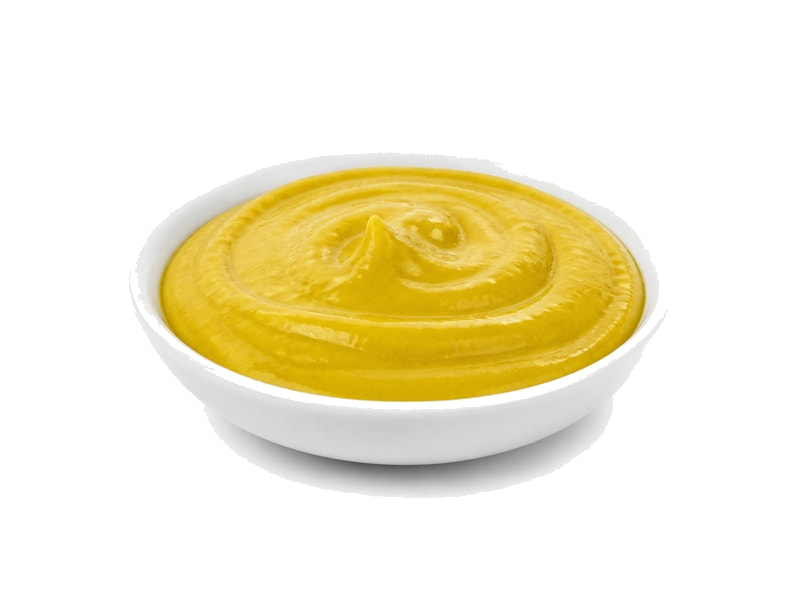

Sosy
Musztarda kremowa
Musztarda kremowa: 9 g białka, 162 kcal, 6 g węglowodanów i 11 g tłuszczu na 100 g. Kategoria: Sosy.
Kalorie162 kcalna 100 g
Białko / proteiny9 g
Węglowodany6 g
Tłuszcz11 g
Cena (szac.)~2,90 złza 100 g
Ceny zaktualizowano: maj 2026 (szacunek — ceny w popularnych supermarketach)
Porcja: łyżeczka (10g)
| Kalorie | 16 kcal |
|---|---|
| Białko | 0.9 g |
| Węglowodany | 0.6 g |
| Tłuszcz | 1.1 g |
| Cena (szac.) | ~0,29 zł |
Szczegółowe składniki odżywcze na 100 g
| Wartość energetyczna (kalorie) | 162 kcal |
|---|---|
| Białko (proteiny) | 9 g |
| Węglowodany | 6 g |
| Tłuszcz | 11 g |
| Tłuszcze nasycone | 0.6 g |
| Tłuszcze nienasycone | 10.4 g |
| Witaminy i minerały | Selen, Żelazo, Sód |
| Współczynnik kcal / 1 g białka | 18.0 |
| Cena produktu (szac. za 100 g) | ~2,90 zł |
| Cena za 100 g białka (szac.) | ~32,22 zł |